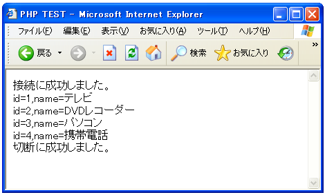

- Home ›
- PHP入門 ›
- PostgreSQLへの接続
データの取得(SELECT)
ここからはデータベースへクエリーを発行する方法を見ていきます。クエリーを発行するには「pg_query」関数を使います。
pg_query resource pg_query(resource connection, string query)
pg_query() 指定したデータベース connection 上で query を実行します。
エラーが発生して FALSE が返された場合、もし接続が正常なら
pg_last_error() 関数を使用してエラーの詳細情報が 取得可能です。
引数：
connection PostgreSQL データベース接続リソース。connection が指定され
ていない場合はデフォルトの接続が使用されます。 デフォルトの接続は、
直近の pg_connect() あるいは pg_pconnect() によって作成されたもので
す。
query 実行する 1 つまたは複数の SQL 文。複数の文が関数に渡された場合
は、明示的に BEGIN/COMMIT コマンドを指定していない限りはそれらの文は
ひとつのトランザクションとして実行されます。しかし、1回のコールで複
数のトランザクションを実行することは推奨されません。
返り値：
成功した場合にクエリ結果リソース、失敗した場合に FALSE を返します。
SQLで記述されたクエリーを発行します。SELECTなどの場合、クエリーでは結果としてresource型の値を受け取ります。そのresource型の値から実際に帰ってきたデータを取得していきます。
実際の使い方としては下記のようになるかと思います。
$conn = "host=localhost dbname=uriage user=pguser password=pguser";
$link = pg_connect($conn);
if (!$link) {
die('接続失敗です。'.pg_last_error());
}
print('接続に成功しました。<br>');
$result = pg_query('SELECT * FROM xxxx');
if (!$result) {
die('クエリーが失敗しました。'.pg_last_error());
}
$close_flag = pg_close($link);
if ($close_flag){
print('切断に成功しました。<br>');
}
SELECT文の発行
クエリーの実際の例として、まずSELECT文の発行を試してみます。SELECT文はデータベースから条件にあう行に含まれる指定フィールドの値を取り出すものです。よって結果としては複数のフィールドに関する値が複数の行数分だけ帰ってくるはずです。
resource型の値から実際のデータを取り出すためには「pg_fetch_array」関数を使います。
pg_fetch_array array pg_fetch_array (resource result [, int row [, int result_type]])
pg_fetch_array() は、取得した行（レコード）を 配列で返します。
エラーが発生して FALSE が返された場合、もし接続が正常なら
pg_last_error() 関数を使用してエラーの詳細情報が 取得可能です。
引数：
result pg_query(), pg_query_params() あるいは pg_execute() から返され
る PostgreSQL のクエリ結果リソース。
row 取得する行番号。最初の行は 0 です。指定されなかった場合、次の行が
取得されます。
result_type result_type は、返り値の形式を制御する オプションのパラメー
タです。result_type は定数であり、次の値のどれかとすることが可能です。
PGSQL_ASSOC、PGSQL_NUM および PGSQL_BOTH。 PGSQL_NUM を使用すると、
pg_fetch_array() は数値添字の配列を返します。また、PGSQL_ASSOC を使
用すると連想配列形式で返します。PGSQL_BOTH がデフォルト設定で、これ
は数値添字の配列と連想配列の両方を返します。
返り値：
0 から始まる数値添字の配列か連想配列（フィールド名をキーとする）、ある
いはその両方を返します。配列の各要素の値は文字列です。 データベース
の NULL 値は、NULL として返します。row が結果の行数より大きい場合・行
が存在しない場合 、そしてそれ以外のエラーが発生した場合は FALSE を返
します。
「result_type」の値で結果をどのような配列として取得するかを指定できます。「PGSQL_NUM」の場合は0から始まる数値のインデックスで配列にアクセスできます。「PGSQL_ASSOC」の場合は項目名による連想配列の形です。
例として下記のようなSELECTを発行した場合で考えて見ます。
$result = pg_query('SELECT id, name FROM shouhin');
if (!$result) {
die('クエリーが失敗しました。'.pg_last_error());
}
「PGSQL_NUM」を指定する場合は下記のようになります。
$rows = pg_fetch_array($result, NULL, PGSQL_NUM); print($rows[0]); print($rows[1]);
「PGSQL_ASSOC」を指定する場合は下記のようになります。
$rows = pg_fetch_array($result, NULL, PGSQL_ASSOC); print($rows['id']); print($rows['name']);
取得する行番号は特に指定しなければ最初の行から順番に取得してくれます。その為、行番号の指定が不要であればNULLを指定しておいて下さい。
次に全ての行を取得する時に、結果としていくつの行が帰ってきたかを確認する方法です。「pg_num_rows」関数を使います。
pg_num_rows int pg_num_rows (resource result)
PostgreSQL の結果リソースの 行数を返します。
引数：
result pg_query(), pg_query_params() あるいは pg_execute() から返され
る PostgreSQL のクエリ結果リソース。
返り値：
結果の行数を返します。エラー時には -1 を返します。
以上のことからクエリーの結果に含まれる全ての行のデータを取り出すには、下記のような感じで記述します。
$result = pg_query('SELECT id, name FROM shouhin');
if (!$result) {
die('クエリーが失敗しました。'.pg_last_error());
}
for ($i = 0 ; $i < pg_num_rows($result) ; $i++){
$rows = pg_fetch_array($result, NULL, PGSQL_ASSOC);
print($rows['id']);
print($rows['name']);
}
では実際に試してみます。データベース名「uriage」に含まれる「shouhin」テーブルからデータを取得してみます。
<html>
<head><title>PHP TEST</title></head>
<body>
<?php
$conn = "host=localhost dbname=uriage user=pguser password=pguser";
$link = pg_connect($conn);
if (!$link) {
die('接続失敗です。'.pg_last_error());
}
print('接続に成功しました。<br>');
pg_set_client_encoding("sjis");
$result = pg_query('SELECT id, name FROM shouhin');
if (!$result) {
die('クエリーが失敗しました。'.pg_last_error());
}
for ($i = 0 ; $i < pg_num_rows($result) ; $i++){
$rows = pg_fetch_array($result, NULL, PGSQL_ASSOC);
print('id='.$rows['id']);
print(',name='.$rows['name'].'<br>');
}
$close_flag = pg_close($link);
if ($close_flag){
print('切断に成功しました。<br>');
}
?>
</body>
</html>
※今回はPHPのファイルをSJISで記述しているため、「pg_set_client_encoding」関数を使ってクライアントのエンコーディングを「SJIS」に指定しています。ご自分の環境に合わせて変更して下さい。(日本語関係の詳細は別途確認します)。
上記ファイルをWWWサーバに設置しブラウザ経由で見ると下記のように表示されます。

( Written by Tatsuo Ikura )

著者 / TATSUO IKURA
初心者～中級者の方を対象としたプログラミング方法や開発環境の構築の解説を行うサイトの運営を行っています。